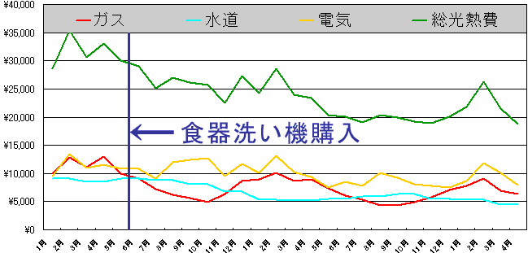

2000年6月からホシザキの食器洗い機（JW-10C2）を 使っています。
気になる設置法や設置後のランニングコストです。参考になさってください。
ホシザキJW-10C3特急すすぎについて
今ならヨドバシで買います
『食器洗い機考』むかりんさんのページです。
ここをみて食器洗い機を買うことにしました。
| 食器洗い機 | ホシザキ JW-10C2 |
\75,600
|
| 分岐水栓 | ホームセンターにある普通のやつ |
\2,500
|
| 食器洗い機をのせる台 | 木製の組み立て家具の棚板 |
\2,000
|
| クリアラッカー | 上記棚板の防水のため |
\150
|
| 総額 |
\80,250
|
木製の棚板は約２年半たった今でも腐りもせずうまいこと働いています。
簡単にまとめると、、、
ということになります。

Copyright(c)2000-2003 Kaneta